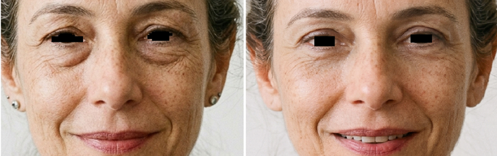
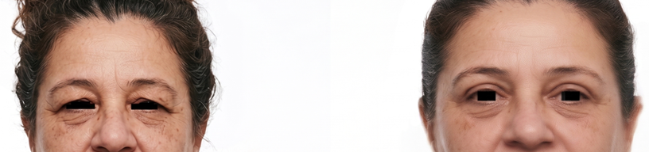

“A pálpebra come a sombra”
Pode acontecer quando o excesso de pele reduz a exposição da pálpebra móvel. A posição da sobrancelha também precisa ser considerada.
A cirurgia das pálpebras pode tratar excesso de pele e bolsas, mas precisa diferenciar o que vem das pálpebras, sobrancelhas, olho seco, ptose e olheiras.
Dra. Amanda Schroeder · Cirurgia Plástica · CRM-SP 191605 · RQE 110472 · Pinheiros
Consulta particular em Pinheiros · Nota fiscal para reembolso

Os pacientes nem sempre usam termos médicos para falar das pálpebras. Essas expressões ajudam a iniciar a conversa, mas podem representar alterações diferentes.
Pode acontecer quando o excesso de pele reduz a exposição da pálpebra móvel. A posição da sobrancelha também precisa ser considerada.
A pele pode encostar na maquiagem e transferir o produto. Nem sempre retirar mais pele é a única ou a melhor resposta.
Bolsas, sulcos, pigmentação, qualidade da pele e posição das sobrancelhas podem contribuir para uma aparência cansada.
O volume abaixo dos olhos pode estar relacionado às bolsas de gordura, mas também pode coexistir com sulcos, flacidez ou alterações da região malar.
Pode descrever excesso de pele, sobrancelha baixa ou uma queda verdadeira da margem palpebral. Essas condições não devem ser tratadas automaticamente da mesma maneira.
Uma avaliação cuidadosa diferencia alterações palpebrais das mudanças que vêm das sobrancelhas, da superfície ocular, dos volumes e da pele.
Pode esconder a pálpebra móvel, dificultar a maquiagem e criar sensação de peso.
Podem produzir volume persistente abaixo dos olhos, mesmo após descanso adequado.
Uma sobrancelha baixa pode aumentar a pele aparente sobre a pálpebra e modificar a indicação.
Quando a margem da pálpebra está mais baixa, a investigação e o tratamento não são necessariamente os mesmos da blefaroplastia convencional.
Pigmentação, vasos, rugas finas, perda de volume e sulco lacrimal podem exigir outra abordagem.
A indicação depende da causa principal da queixa, da função ocular, da anatomia e do que a paciente considera um resultado natural.
Não é necessário chegar à consulta sabendo se deseja blefaroplastia superior, inferior ou associação. A técnica é definida depois do exame.
Observe o que foi tratado em cada caso e como a indicação respeita características individuais. A sua anatomia, seu plano e a evolução não são iguais aos de outra paciente.

Pálpebras, bolsas, pele, sobrancelhas e proporção facial participam do planejamento.

O objetivo, a extensão e as associações são definidos conforme as estruturas que participam da queixa.

Planejamento individual para a região superior, respeitando o formato dos olhos e a expressão.
Casos reais com finalidade educativa; cada anatomia, indicação e evolução é individual, sem garantia de resultado semelhante.
Os nomes ajudam a compreender a região tratada, mas não substituem o exame nem determinam antecipadamente a técnica.
Pode tratar excesso de pele e, em casos selecionados, bolsas superiores. A quantidade removida deve respeitar o fechamento ocular, o formato dos olhos e a posição das sobrancelhas.
Pode tratar bolsas, excesso de pele e alterações do contorno inferior. O acesso pode ser interno ou próximo aos cílios, conforme a anatomia e o que precisa ser tratado.
Pálpebras superiores e inferiores podem ser tratadas no mesmo planejamento quando há benefício e segurança. Sobrancelhas, volume, pele e terço médio são avaliados separadamente.


O procedimento pesquisado entra na conversa. A técnica é confirmada depois do exame para endereçar sua queixa, respeitando a função ocular e a expressão. A consulta organiza indicação, alternativas, cicatrizes, riscos, anestesia, recuperação e próximos passos antes de qualquer decisão.
A extensão do procedimento, o tratamento das pálpebras inferiores e as associações podem modificar o cronograma.
A cicatriz costuma acompanhar a dobra natural da pálpebra e pode ter pequena extensão lateral. Ela começa mais visível e amadurece ao longo dos meses.
Quando há incisão externa, ela costuma ficar próxima à linha dos cílios. Em alguns casos, o acesso pode ser feito por dentro da pálpebra, sem cicatriz externa, dependendo do que precisa ser tratado.
Edema e equimoses podem ficar mais evidentes antes de começar a regredir.
Retornos, cuidados locais e acompanhamento da cicatrização.
Muitas pacientes retomam atividades sociais leves.
Redução progressiva dos sinais externos e retorno gradual à rotina.
Aspecto e sensibilidade mais próximos do habitual.
Refinamento das cicatrizes e do edema residual.
Compressas e colírios podem ser orientados conforme o caso. Maquiagem, lentes de contato e atividade física são retomadas em momentos diferentes de acordo com a cicatrização, a superfície ocular e a evolução. Lacrimejamento, irritação, sensibilidade e olho seco podem ocorrer temporariamente.
Segurança depende da avaliação clínica e ocular, do preparo, da técnica, do ambiente cirúrgico e do acompanhamento.
Histórico de saúde, fechamento ocular, sintomas, olho seco e função das pálpebras.
Revisão de anticoagulantes, colírios, lentes de contato e procedimentos oculares anteriores.
Estrutura e estratégia anestésica escolhidas conforme o plano. Quando indicados, os procedimentos podem ser programados no Hospital Sírio-Libanês, Hospital Nove de Julho, Hospital Alemão Oswaldo Cruz ou em outras instituições criteriosamente selecionadas.
Acompanhamento da cicatrização, da superfície ocular e de sinais que exijam avaliação antecipada.
Dra. Amanda atua com uma equipe cirúrgica organizada conforme o plano, o ambiente escolhido e as necessidades de cada caso.

Quando existem sintomas oculares, ptose, alterações de visão ou cirurgias prévias, uma avaliação oftalmológica complementar pode ser solicitada. Riscos e medidas de prevenção são discutidos individualmente na consulta.
Relatos reais sobre orientação, explicação detalhada e respeito às características individuais.
“Ela me orientou para uma opção mais adequada, respeitando minhas características e particularidades.”Ana Elisa D’AnnibaleAvaliação pública no Google
“Sempre explica tudo com detalhes e tira todas as dúvidas.”Tais MasciaAvaliação pública no Google
“Ótima formação profissional, coerência, acolhimento e me passa segurança.”Raphaela GarofoAvaliação pública no Google
Vídeos curtos sobre as pálpebras, cicatrizes, planejamento e diferentes idades de indicação.
Pálpebras, bolsas e estruturas ao redor dos olhos mudam de maneiras diferentes.
Localização, evolução e diferenças entre os acessos superior e inferior.
O que precisa ser avaliado antes de definir se a abordagem será superior, inferior ou combinada.
A indicação não depende apenas da idade: excesso de pele, bolsas e queixas palpebrais precisam ser avaliados no seu contexto.
As respostas são referências gerais. Técnica, riscos, anestesia, recuperação e cicatrizes só podem ser definidos após exame e avaliação clínica.
A consulta diferencia excesso de pele, bolsas, posição das sobrancelhas, olho seco, olheiras e outras alterações para organizar indicação, cicatrizes, recuperação e próximos passos.